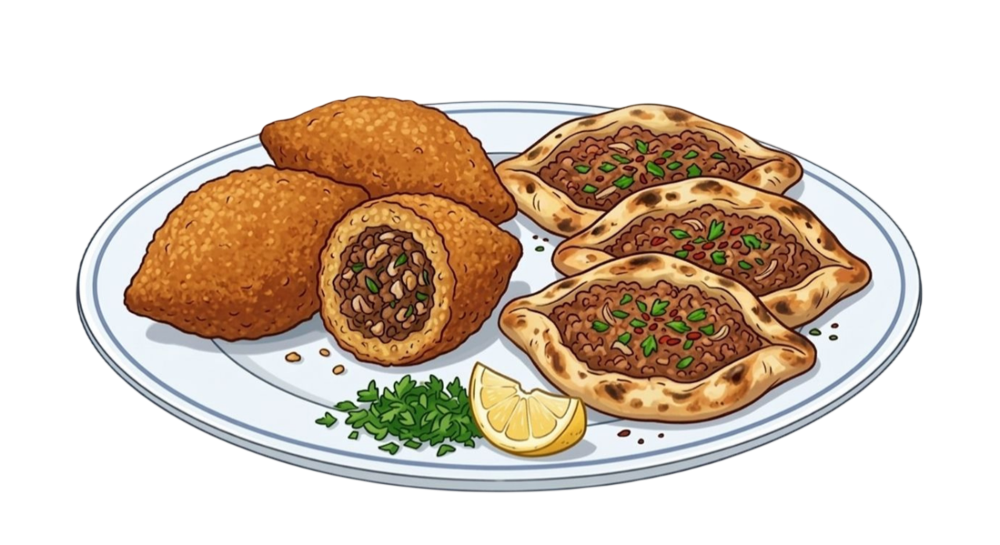

Şanlıurfa’nın bereketli topraklarından, annelerimizin nesiller boyu aktardığı o eşsiz tarifleri sofralarınıza taşımak için yola çıktık. Küçük bir mutfakta, büyük bir tutkuyla başladığımız bu yolculukta; çıtır çıtır Ağzı Açık ve Semseklerden, tam kıvamında İçli Köftelere, incecik açılmış Yaprak Sarmalardan damak çatlatan Ağır Yemeklere kadar her şeyi ilk günkü özenle hazırlıyoruz.
Sadece bir sipariş noktası değil, mutfağınızdaki yardımcınız olmayı hedefliyoruz. İster canınız ev yapımı bir kurabiye çeksin, ister toplu yemek organizasyonlarınızda profesyonel bir destek arayın; her bir tabağımıza Urfa’nın samimiyetini ve evimizin temizliğini katıyoruz. Instagram üzerinden kurduğumuz bu gönül köprüsüyle, geleneksel lezzetlerimizi modern bir dokunuşla kapınıza getiriyoruz.